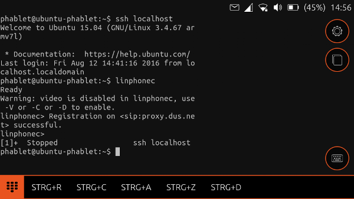

SIP Telefonie über Terminal und Linphone auf dem Ubuntu Phone
Dieser Artikel bezieht sich auf Ubuntu Touch, die Variante von Ubuntu für mobile Geräte mit Touchscreen.
Getestet wurde der Artikel für folgende Version(en):
Ubuntu Touch 15.04 Vivid Vervet
Achtung!
Die Verwendung dieses Howto geschieht auf eigene Gefahr. Insbesondere enthält das Howto das Beschreibbarmachen der Systempartition bei Ubuntu Touch Geräten, um per apt-get Programme installieren zu können. Dies ist keine offiziell unterstützte Funktion von Ubuntu Touch. Bei zukünftigen OTAs (Over the Air Aktualisierungen) kann es zu Problemen, z.B. wegen mangelndem Speicher auf der Systempartition, kommen. Eventuell ist bei Problemen das erneute Flashen von Ubuntu auf das Gerät notwendig. Dazu kann z.B. das flash tool[7] oder ein spezielles Batch Tool  für Ubuntu Geräte verwendet werden. Bei Problemen mit der Anleitung melde dies bitte in der dazugehörigen Diskussion und wende dich zusätzlich an den Verfasser des Howtos.
für Ubuntu Geräte verwendet werden. Bei Problemen mit der Anleitung melde dies bitte in der dazugehörigen Diskussion und wende dich zusätzlich an den Verfasser des Howtos.
Hinweis:
Diese Howto-Anleitung wurde zuletzt von "romensch2" am 12.08.2016 unter Ubuntu Touch 15.04 (OTA 12) erfolgreich getestet. Das Testgerät war ein BQ Aquaris E4.5.
Zum Verständnis dieses Artikels sind folgende Seiten hilfreich:
Einleitung¶
Der Artikel beschreibt das Nachrüsten einer SIP Telefoniefunktion Session_Initiation_Protocol für das Ubuntu Phone bzw. generell für Geräte, die mit Ubuntu Touch[1] laufen. Dazu wird über apt-get[2] das Programm linphone[3] installiert. Da nicht alle Ubuntu Touch Geräte Libertine bzw. X11 Apps unterstützen, wird linphone dann nur im Terminal ausgeführt. Erfolgreich getestet wurden folgende Funktionen: Anrufen lassen, Anruf annehmen, andere Nummern anrufen.

Anleitung¶
Konfiguration von linphone¶
Am einfachsten erfolgt die Konfiguration von linphone am Ubuntu Desktop mit grafischer Oberfläche. Dazu installiert und konfiguriert man linphone nach Anleitung[3] für seinen SIP-Account. Nachdem im Grafikmodus die Funktion geprüft wurde, kann man die App am Desktop schonmal im Terminal ausprobieren.
linphonec
Zur Bedienung von linphone über das Terminal gibt es hier eine Anleitung .
Die wichtigsten Befehle sind:
call 1234: Nummer 1234 anrufenanswer: Eingehenden Anruf annehmenterminate: Auflegenquit: linphone beenden
linphone auf dem Phone installieren¶
Um linphone auf dem Phone zu installieren, muss man das Image beschreibbar machen[4]: Ubuntu Touch/Terminal.
Um Speicherprobleme bei der Installation mit apt-get zu vermeiden [2], wird vorsichtshalber der Cache zuerst ausgelagert: Ubuntu Touch/Terminal.
Dann erfolgt die eigentliche Installation von linphone:
#Paketquellen einlesen sudo apt-get update #linphone installieren sudo apt-get install linphone #Aufraeumen: Cache leeren sudo apt-get clean
Danach am besten die Systempartition wieder sperren.
sudo mount -o remount,ro /
linphone Konfigurationsdaten kopieren¶
Als nächstes kopiert man die Konfigurationsdaten von linphone vom Homeverzeichnis auf dem Desktop (~/) auf das Homeverzeichnis am Phone (/home/phablet). Am besten werden alle Dateien mit .linphone aus dem Home-Verzeichnis kopiert, damit die nötigen Konfigurationsdateien enthalten sind. Bei der Erstellung dieser Anleitung waren das der Ordner .linphone-web sowie die Dateien .linphonec_history, .linphone-history.db und .linphonerc.
linphone per phablet-shell ausführen¶
Nun ergibt sich das Problem, dass linphone nicht direkt in der Terminal App ausgeführt werden kann, da es nicht genug Rechte für die Terminal App gibt. Man bekommt beim Versuch, ein Telefonat zu führen, immer eine Fehlermeldung pulseaudio error. Dies kann man umgehen, indem man linephone aus einer SSH-Sitzung über die phablet-shell ausführt. Diese verfügt über mehr Rechte, um den nötigen Audiostream zu initialisieren.
Dazu muss man sich per ssh vom Phone mit dem Phone selbst verbinden [4][5]: Ubuntu Touch/Terminal
Zum Einrichten der SSH-Verbindung wie folgt vorgehen:
Achtung!
Der Schritt der Schlüsselerzeugung mit ssh-keygen muss unbedingt von der Terminal App aus ausgeführt werden, ansonsten kann man von der Terminal App aus später nicht die ssh Verbindung starten!
cd ~/.ssh #Schluesselpaar erzeugen und in die Liste vertrauenswürdiger Keys aufnehmen #Hierbei am besten keine Passphrase eingeben, sondern nur bestätigen ssh-keygen -t rsa -f localhost_rsa cat localhost_rsa.pub >authorized_keys #Mit beliebigem Editor die Datei authorized_keys bearbeiten nano ~/.ssh/authorized_keys #Am Anfang der letzten Zeile eine Ergänzung vornehmen from="127.0.0.1"LEERZEICHEN #Die Zeile sieht nun so aus: from="127.0.0.1" ssh-rsa AAARESTDESKEYS #ssh Verbindung in Config Datei anlegen nano ~/.ssh/config #Inhalt der Datei Host localhost Hostname 127.0.0.1 IdentityFile /home/phablet/.ssh/localhost_rsa
Dann kann man von der Terminal App aus die SSH Verbindung starten und linphone ausführen:
ssh localhost #... linphonec #... call 1234 #ruft Nummer 1234 an usw, siehe Dokumentation von linephone #... quit #linphone beenden exit #ssh Verbindung schließen
Zum Telefonieren empfiehlt sich ein Headset, da Gespräche immer im Lautsprecher-Modus laufen.
Optional: Lifetime Exception anlegen¶
Zum Telefonieren reicht die oben beschriebene Installation bereits aus. Allerdings beendet der "deep sleep" Modus der Energieverwaltung die ssh Verbindung automatisch nach einer bestimmten Zeit. Dadurch werden laufende Telefonate zwar nicht beendet, aber im Terminal kann z.B. ein laufender Anruf nicht mehr beendet werden. Das Telefonat kann dann nur noch über das Schließen der Terminal App beendet werden. Um das zu verhindern und außerdem nach der Anmeldung mit linphonec auch für eingehende Anrufe erreichbar zu sein, setzt man eine Lifecycle-Ausnahme für die Terminal App. Am einfachsten funktioniert das mit dem UT Tweak Tool aus dem OpenStore [6]. Die Installation des OpenStore ist im dazugehörigen Wiki-Artikel beschrieben. Nach Installation des Tweak Tool muss man zum Start das Passwort eingeben, um die nötigen Rechte zu erhalten. Dann wählt man im Menü den Punkt "App Scopes" aus. In der folgenden Liste sucht man die Terminal Anwendung heraus und aktiviert dort die Option "Prevent app suspension".
Wer keine Fremdquellen benutzen will, kann alternativ die Ausnahmen auch über die Kommandozeile verwalten. Mit folgendem Befehl im Terminal zeigt man die Liste der Apps an, die im Hintergrund ausgeführt werden dürfen:
gsettings get com.canonical.qtmir lifecycle-exempt-appids
Dies wird mit einer Ausgabe z.B. wie der folgenden quittiert
['com.ubuntu.music', 'com.ubuntu.gallery']
Um eine weitere Ausnahme für das Terminal hinzuzufügen, führt man folgenden Befehl aus
gsettings set com.canonical.qtmir lifecycle-exempt-appids "['com.ubuntu.music', 'com.ubuntu.gallery', 'com.ubuntu.terminal']"
- Erstellt mit Inyoka
-
 2004 – 2017 ubuntuusers.de • Einige Rechte vorbehalten
2004 – 2017 ubuntuusers.de • Einige Rechte vorbehalten
Lizenz • Kontakt • Datenschutz • Impressum • Serverstatus -
Serverhousing gespendet von